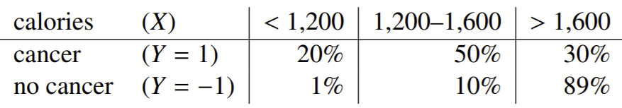
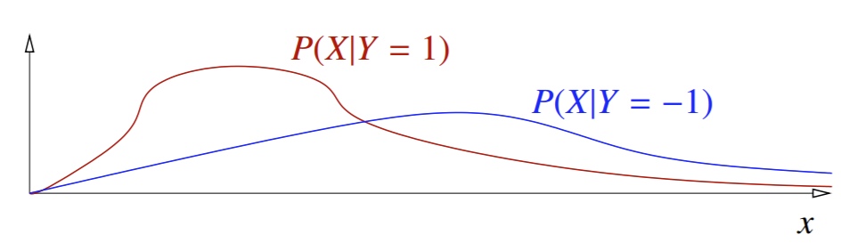
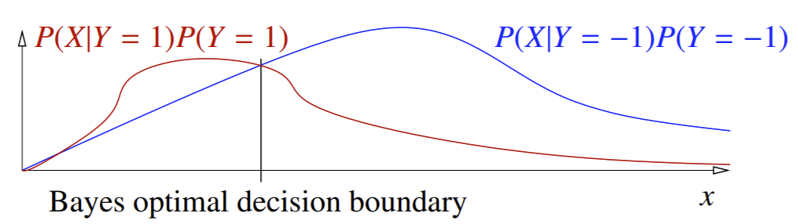
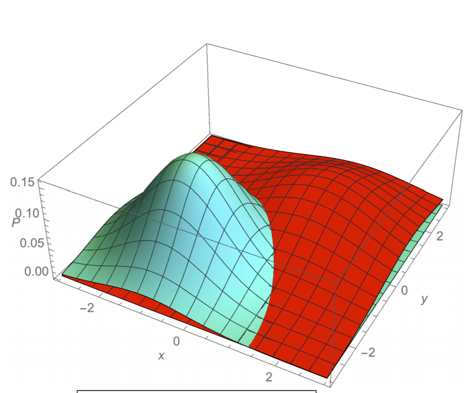

Decision Theory¶
Intro¶
So far, we just covered classifiers that made a hard binary prediction: either a data point belonged in a class or it didn’t. But there can be real-world noise and distortions in data that can seriously mess this up. For example, we can have duplicate points in different classes: imagine two people, both making 50K with 10K credit balance, but one defaults and the other doesn’t. So we obviously won’t be able to have a linear classifier that classifies with 100% accuracy.
But what if we could make a classifier that told us a little more; instead of just the prediction itself, what if we could give the probability that a point belongs to a class? In other words, we would know the probability of a correct prediction for each data point! Such probabilistic classifiers are deeply rooted in decision theory, and see many uses in real life, from spam detection to medical diagnosis.
Example: Cancer Diagnosis¶
A very common example to start with: say we want to build a probabilistic classifer that predicts whether someone has AIDS or not. Let’s say 10% of the population has AIDS (and 90% doesn’t). This is known as the prior probability: the probability of diagnosis before any extra information is known. We’ll denote the prior of having cancer as \(P(Y=1)\). From this, the prior of having no cancer is \(P(Y=0) = 1 - P(Y=1)\).
Now, let’s say we want to predicting a person’s probability of having AIDS after receiving information. For simplicity, we’ll keep it at one feature: calorie intake. Specifically, we want to calculate \(P(Y=1|X)\): the probability a person has cancer given some information \(X\). This term \(P(Y|X)\) often called the likelihood of \(Y\) (cancer)- this is technically incorrect
Note
Obviously in real life a diagnosis would take into account many features, but the concept will extend from one to multiple features very easily anyway.
Now say we grab a bunch of people with various daily calorie intakes, which we divide into three ranges:
Less than 1200 calories
1200-1600 calories
Greater than 1600 calories
From each of these three groups, we measure what proportion of them actually have cancer, giving us the below table:
{kind=link}
Remember that the probability of evidence \(P(X)\) can be expanded to
by law of total probability. For example, given the above chart, the probability that a given person from our sample eats less than 1200 calories can be calculated as \(P(X) = P(X|Y=1)P(Y=1) + P(X|Y=0)P(Y=0) = 0.2 \times 0.1 + 0.1 \times 0.9 = 0.11\).
So back to the original point: we want to predict the posterior probability of a person getting cancer given their calorie intake: \(P(Y=1|X)\). Let’s say we have a guy with a daily calorie intake of 1400 calories. We see that 50 percent of people with cancer have calorie intakes between 1200 and 1600. Do we conclude this patient probably has cancer? No. This reasoning fails to take prior probabilities into account- the fact that cancer itself is rare at 10 percent.
Note
Posterior probabilities are generally interchanged with the term likelihood, although this is technically incorrect: likelihood refers to the probability of a certain model given observed data, where in this case we are predicting the probability of a class prediction given observed data.
So how can we accurately calculate \(P(Y=1|X=1400)\)?
Bayes’ Theorem¶
The correct way to calculate this is to use Bayes’ theorem, which does take prior probabilities into account. Remember that Bayes’ Theorem states that
which means we can formulate ourposterior probability, as
which we can just solve using our table as \(\frac{0.05}{0.14} = 0.357\), or a 35.7% chance the patient has cancer. So contrary to what we said before, our probability of cancer for the 1400-calorie patient is a good amount less than 50%.
Note
The terms \(P(X|Y=1)\) and \(P(X|Y=0)\) are called the class-conditional distributions of \(X\): they represent the probability distribution of \(X\) conditioned on class \(Y\).
One thing to always consider, though, is the importance of false negatives vs. false positives. Because having cancer is such a serious issue, a wrong false negative prediction (incorrectly predicting a patient does NOT have cancer) is much worse than a false positive prediction (incorrectly predicting that a patient DOES have cancer). Thus, we probably want fewer false negatives than false positives. So we might lower our threshold to predict positive, to, say, above 30% posterior probability.
We can represent such a tradeoff between false negatives and positives with our loss function \(L(z,y)\). Before, our loss function simply output 1 for incorrect predictions and 0 for correct- this is called a 0-1 loss function. Here, false negatives and false positives are weighted the same. However, we can certainly adjust this loss function to penalize false negative predictions more! For example, we can set \(L\) as
This is an example of an asymmetrical loss function: not all wrong predictions are punished equally. On the other hand, symmetrical loss functions like 0-1 loss penalize all incorrect predictions equally.
Consider another example with spam. A false positive is predicting that a good email is spam incorrectly, while a false negative is predicting a spam email is legit. Which is worse? Well, in this case, false positives are much worse- we certainly would rather see spam emails rather than not see real, possibly important emails. So we’d want the \(z=1, y=-1\) case in our loss function to be penalized more than \(z=-1, y=1\).
Risk is Expected Loss¶
Remember that our decision function, also called a decision rule, is a function that maps a point in feature space (aka “feature vector”) to \(\pm 1\): predicts in-class or out-of-class.
The risk of a decision rule is its expected loss over all values of \(X, y\). Mathematically:
We assume there is a joint distribution over values of \(X\) and \(y\), and we take the expectation over this distribution. If we know the class-conditional probabilities \(P(X|Y)\), we can expand this further, by summing over \(X\)’s groups, then \(y\). You could also do this the other way around: sum over all possible classes in \(y\), then look at each of \(X\)’s groups that belong to that particular class.
For our cancer example, we first sum over all 3 bins of \(X\) (calorie intake), then for each term sum over all possible classes in \(y\):
So in all, we sum over all calorie intake groups, and in each group, we sum losses for people who have cancer with that calorie intake and those who don’t have that calorie intake.
We could also do this the other way around: sum over the cancer and non-cancer groups first, then for each, sum the expected loss for each calorie intake group:
Bayes Classifier¶
The classifier we want that minimizes this risk \(R(r)\) has a special name: Bayes’ decision rule, or the Bayes classifier. We usually denote this rule as \(r^*\). Assuming that loss is 0 for correct predictions (this should always be the case), we can explicitly write the rule as:
So really, all we’re doing is comparing posterior probabilities, in essence considering two things: first, the probability of our prediction being correct given evidence, and second, if it worse to have a false positive or a false negative.
Note that in the term \(L(-1, 1)P(Y=1|X=x)\), we multiply the false negative loss by the probability that our prediction is incorrect- we’re comparing expected losses here. Make sure you understand why this is the case, as it may be unintuitive to see a product of terms like this.
For a symmetric loss function, \(L(1, -1) = L(-1, 1)\), so all the Bayes classifier is doing is predicting the class with a higher posterior probability.
So if we use the Bayes classifier in our cancer example, by plugging in numbers into the classifier formula our classifier comes out to
The Bayes risk, sometimes called optimal risk, is the risk of the Bayes classifier. We already know the formula for calculating the risk of a classifier. So again, just plugging in numbers will give us:
No decision rule will give a risk lower than 0.249, since this classifier is optimal.
The process of deriving and using the classifier \(r^*\) is called risk minimization: we are literally finding the classifier that minimizes the risk.
Now suppose we graph the class-conditional probability distributions \(P(X|Y=1)\) and \(P(X|Y=-1)\):
But remember that we also must take prior probabilities into account:
Note that such quantities are proportional to our posterior probabilities (since \(P(X)\) is the constant coefficient for both). The intersection of the two curves is the Bayes optimal decision boundary. Remember we just pick the class with the highest posterior probability (or term proportional to it, in this case): we predict cancer for points to the left of the boundary, and no cancer for points to the right.
Note
It is possible to have more than one decision boundary, as curves can intersect at multiple points. In the multiple regions that form, the prediction always corresponds to the higher curve.
Risk in Continuous Distributions¶
Now let’s move to the case where \(X\) is continuous instead of discrete. The definition of risk stays the same, except we need to utilize integrals instead of summations:
For the Bayes decision rule, the Bayes risk is the area under the curve \(\min\{P(X|Y=1)P(Y=1), P(X|Y=-1)P(Y=-1)\}\): the minimum of the curve shown above. This risk can be written as a minimization integral
So for each \(x\), we just choose the “true label” \(y\) that minimizes \(L(-y, y)f(X=x|Y=y)P(Y=y)\) (the graph we plotted), and sum.
Note
If we use 0-1 loss, then \(R(r)\) is the general probability that our prediction \(r(x)\) is wrong. Additionally, this also means the Bayes optimal decision boundary is \(\{x: P(Y=1|X=x) = 0.5 \}\)- where a point has a 50-50 chance of being in either class.
Note the intersection of the two curves is a line- where the Bayes decision boundary lies.
In generating multiclass classifiers, we can actually pretty easily extend this process: just generate one PDF for each class, and simply pick the highest PDF (highest posterior) value for any input \(x\) as a class prediction. In this case, we’ll have multiple decision boundaries.
Bayesian Classifier in Higher Dimensions¶
So far, we’ve just considered one dimension for \(X\) (calorie intake). In the real world, however, \(X\) will have many dimensions. Let’s consider a 2-dimensional feature space. Here is a plot of the (class-conditional) PDFs for points in class C and points not in class C:
3 Ways to Build Classifiers¶
The Bayes classifier is an example of a generative model. In generative models, we assume the sample points come from some probability distribution whose parameters we can estimate. Of course, such distributions are different for each class. Then, for each class C, we fit the distribution parameters to the data in class C, generating the class-conditional distribution \(f(X|Y=C)\). We must also estimate the priors \(P(Y=C)\) for each class. Once we’ve calculated the class-conditionals and priors, we use Bayes’ Theorem to get posterior probabilities \(P(Y|X)\).
On the other hand, we also have discriminative models. In discriminative models, we skip calculating priors and class-conditionals, and instead try to model the target posteriors \(P(Y|X)\) directly. An example of this is logistic regression, which we’ll cover in a few chapters.
There also exist other models which don’t even care about posterior probabilities and just jump right to calculating the decision function \(r(x)\) directly. We already know of one such algorithm: SVMs.
The advantage of generative and discriminative models is that it tells you the probability that your classification is correct/not. Since we estimate the distribution, generative models are able to detect outliers well: outliers will by definition have a very small \(P(X)\). However, it is often hard to accurately estimate these distributions.
Generative models tend to be better when data is normally distributed and there are a lot of sample points.